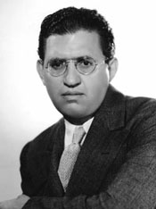
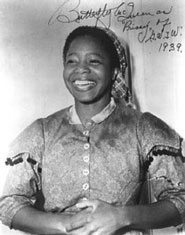

|
The success of Margaret Mitchell's Gone With the Wind
was phenomenal. Published on 30 June 1936 to widespread
critical praise, it reached thousands as a Book-of-the-Month
Club selection and by spring 1937 had sold over a million
copies in stores. What fascinated most readers and even
serious reviewers was not only Mitchell's bold story but her
apparently scrupulous yet altogether affectionate evocation
of the Old South. For Mitchell, the region and its people
were indomitable: "Malign fate had broken their necks,
perhaps, but never their hearts. They had not whined, they
had fought. And when they died, they died spent but
unquenched."
The scent of magnolias lingers about this and other
passages in Gone With the Wind, lending it finally a
more romantic than realistic sense of history. Mitchell's
treatment of postwar blacks, for example, divides the race:
the "good" Negroes retained their loyalty and servility to
former owners, and the "bad" ones-running wild, "either from
perverse pleasure in destruction or simply because of their
ignorance" (p. 65.) caused trouble for white and black
alike. This view of Reconstruction, not incompatible with
racism, had originated in early twentieth-century
historiography; D. W. Griffith's The Birth of a
Nation (1915) had given it eloquent cinematic
expression, and in the 1930's many people--including a
number of academicians and intellectuals--still subscribed
to it. Not unexpectedly, however, many American liberals and
Communists were outspoken in their condemnation of
Mitchell's racial attitudes. As Mal Cowley wrote in The New
Republic (16 September 1936), the novel's presentation of
Southern life was "false in part and silly in part and
vicious in its general effect" (p. 16).
To David Selznick, who had purchased the rights to film
the novel, Gone With the Wind was, whether accurate
or not, a very valuable property. But as a producer who had
grown up in the movie business, Selznick knew that certain
elements of the novel would require judicious treatment when
filmed by his studio. "I think we have to be awfully
careful," he wrote to screenwriter Sidney Howard in January
|

David O. Selznick
|
1937, "that the Negroes come out decidedly on the right side
of the ledger." Racial bookkeeping, for several reasons, was
problematic. Like so many Americans, Selznick had absorbed
much Reconstruction lore from The Birth of a Nation.
In that same letter to Howard, for example, he distinguished
"between the old Klan and the Klan of our times" and found
only the latter culpable. He furthermore believed that in
adaptation from page to screen, fidelity spelled success.
His acclaimed productions of such famous novels as David
Copperfield, Anna Karenina, and A Tale of Two
Cities (all 1935 releases) reinforced his compulsion "to
try as far as possible to retain the original, [for] the
degree of success in transcribing an original has always
been proportionate to the success of the transcribers in
their editing process." Predisposed to leave Mitchell's
novel intact, Selznick might have produced a Gone With the
Wind potentially as offensive to black people in 1939 as
Griffith's film had been a quarter century earlier.
But the gates of Selznick International Pictures were not
locked against outside influence. Looking over Selznick's
shoulder were three external agents that could help secure
the producer's commitment to blacks: the Production Code
Administration, the National Association for the Advancement
of Colored People, and the Negro press. The movie industry's
superego, the Production Code Administration (PCA), had been
created in 1934 to regulate the moral and social content of
motion pictures. In only one section (Sec. 11:6) did the
Code speak to treatment of the Negro: "Miscegenation (sex
relationship between the white and black races) is
forbidden." Yet the PCA's "black book," a compilation of
Code rulings on individual films, spoke to dozens of
restrictions, some suggested by the Code and others not. In
examining Gone With the Wind as it evolved, PCA head
Joseph Breen would be sensitive to all words, actions, or
plot points likely to inflame Negroes and focus adverse
publicity on the completed film and, more importantly, on
Hollywood itself.
Black groups were even more vigilant. Despite their
limited past success and their sporadic and unfocused
commitment to affecting Hollywood, both the National
Association for the Advancement of Colored People and the
Negro press were keenly aware of the racial issues embodied
within certain mainstream American films. Each black group
dealt with the white motion-picture community differently,
however. The centerpiece of the NAACP s relationship with
Hollywood was a prolonged attempt to suppress The Birth
of a Nation. On this battle, the organization had
expended money, energy, and even the good will of the
American Civil Liberties Union. Furthermore, a small but
prominent number of people whom the Association supposedly
represented--specifically, black actors--felt that its
demands for the elimination of racial stereotypes had
resulted in fewer roles for Negroes. In 1940, Hollywood
blacks accused the NAACP's executive secretary Walter White
of "trying to be white from the safety of New York offices."
I If the NAACP interested itself in Gone With the
Wind, it would have to tread carefully.
Regarding the movies and racial stereotyping in the
1930's, the black press sent out conflicting signals. While
some papers, many of them in the East, chastised blacks for
portraying demeaning characters, others proudly charted the
progress of Negro actors who were "making it" in Hollywood.
The rank-and-file newspaper reader was probably more
responsive to this latter position. Particularly for
Negroes, few substantial jobs were available during the
Depression. Many blacks must have regarded as untenable the
suggestion that, for whatever reason, their California
brothers should abandon the clean, remunerative, and
apparently glamorous work of film acting. In any event, the
Negro press's oscillation between two irreconcilable points
of view seemed to leave little impetus for action that could
seriously injure a Hollywood film.
Why, then, in 1937 did Selznick create a Gone With the
Wind clerical file labeled "The Negro Problem"? The
"readings" of the NAACP and the black press given in the
preceding paragraphs benefit from hindsight; in 1937,
Selznick perceived that both forces might very well choose
to mount a vigorous campaign against the filming of Gone
With the Wind. The sensitivity of the motion-picture
industry to any criticism ensured that the moguls or their
policeman, the Production Code Administration, would hear
and perhaps even heed the voice of organized blacks. In
addition, the movie capital's increased awareness of
Germany's racial persecution--the subject, incidentally, of
numerous editorials in Negro publications--made many of its
predominantly Jewish leaders, Selznick among them,
especially eager to avoid offending blacks. In short, as the
producer of Gone With the Wind interpreted it, the
Negro in the late 1930's was poised to exert his influence
upon American motion pictures. Selznick's relationships with
the Production Code Administration and the black community
thus not only provide a vivid insight into the producer's
craft, but constitute a barometer of Hollywood and American
black-white relations in the twilight of the Depression and
on the eve of the postwar period in which blacks would win
some of their greatest victories in the field of civil
rights.
Atlantan Margaret Mitchell, who claimed that she was
"practically raised" on Thomas Dixon's books, maintained a
paternalistic view of Negroes that was common to her time
and region. As inferiors, black people required enlightened
white people's care. "We've always fought for colored
education," Mitchell wrote to fellow Georgian Susan Myrick,
"and, even when [my husband] John and I were at our worse
financially, we were helping keep colored children in
schools, furnishing clothes and carfare. In Gone With the
Wind, she pictured blacks as children whose physical and
moral needs were met by responsible white masters. The
deserving Negro appreciated the attention; when Big Sam was
reunited with Scarlett O'Hara after the war, "his
watermelon-pink tongue lapped out, his whole body wiggled
and his joyful contortions were as ludicrous as the
gambolings of a mastiff" (p. 779). In a letter, Mitchell
acknowledged that despite Scarlett's many faults she
remained admirable because "she loved her Negroes and looked
after them" (p. 112). Uncared for, lower class Negroes in
Gone With the Wind became "black apes" who committed
"outrages on women" (pp. 589 and 656). One evening, "a squat
black negro with shoulders and chest like a gorilla"
attacked Scarlett during her ride home through Shantytown;
he was "so close that she could smell the rank odor of him"
as he ripped open her bodice and "fumbled between her
breasts" (pp. 787-88). Under such circumstances, Mitchell
wrote in Gone With the Wind, the Ku Klux Klan was a
"tragic necessity" (p. 656).
For many blacks, the novel's use of the words "nigger"
and "darkey" was as insulting as its relentlessly white
point of view on Reconstruction. Mitchell had heard the
criticism of what she called "trouble-making Professional
Negroes" but insisted that black people in her
region--"colored elevator operators, garage attendants,
etc."--had read Gone With the Wind "in large herds"
and seemed "well pleased." Defending her use of the words
"darkey" and "nigger," she argued further that "nice people
in antebellum days" referred to Negroes as "darkies" and
Negroes in her own time referred to themselves as "niggers"
(Letters, pp. 273-74, 139).
The common usage of both terms supported her point.
Webster's 1943 New International Dictionary labeled each
"colloquial" but only "nigger" as "usually derogatory." The
acceptability of "darkey" was not confined to the South.
When Sidney Howard wrote to Mitchell in November 1936, he
called her book's black characters "the best written
darkies, I do believe, in all literature" (Letters,
p. 93). Clearly, not even this broad-minded white Easterner
(a friend of the NAACP's Walter White) regarded "darkey" as
patronizing.
Apparently sharing Selznick's belief that the most
faithful adaptation of Gone With the Wind would be
the best, Howard wrote some lengthy "Preliminary Notes on a
Screen Treatment" in 1936, retaining both derogatory terms
for "Negro" as well as other elements that were potentially
offensive to the race. Howard did acknowledge, though, that
the introduction of the Ku Klux Klan was problematic:
"Because of the lynching problems we have on our hands these
days, I hate to indulge in anything which makes the lynching
of a Negro in any sense sympathetic." When Selzaick received
Howard's fifty-page draft, he conferred with director George
Cukor and made his first move to balance the ledger: he
eliminated all of the screenwriter's references to the Ku
Klux Klan. The men who went forth to avenge the smudge on
Scarlett's honor, Selznick felt, did not require "long white
sheets over them and ... their membership in a society as a
motive." While he found little wrong with the Klan of
Reconstruction, he feared that its presence might constitute
an unintentional advertisement for intolerant societies in
these fascist-ridden times" (Memo, p. 152). Yet even as
Selznick worked constructively to obviate a "Negro problem,"
the first black response to the filming of Mitchell's novel
was already being felt.
Negroes began writing to Selznick International in early
1937. In a 21 January 1937 letter, Lloyd Brown, the
secretary of Pittsburgh's Negro Youth Congress, called
Gone With the Wind "a, glorification of the old
rotten system of slavery, propaganda for race-hatreds and
bigotry, and incitement to lynching." If the film were made,
he wrote, the seven-thousand-member national Negro Youth
Congress (NYC) would boycott it, picket theaters, and elicit
support from churches, liberal institutions, and "especially
the Jewish people" to rout its racial intolerance. Other
urban groups, most of them without the Communist ties of the
NYC, sent similar letters, and Selznick personally read
them. In the isolated world of Hollywood, they gave him
contact with the individuals whom later the NAACP and the
black press would collectively represent. But since he
intended to place the film's black characters "on the right
side of the ledger" anyway, he regarded the letters as
"obviously ridiculous" and diplomatically told his
correspondents as much.
In Sidney Howard's "Preliminary Notes," Selznick had
neither commented on nor deleted the word "nigger." When a
Production Code Administration employee read Howard's draft
in 1937, however, he flagged it. Interestingly, the PCA did
not prohibit but simply regarded as "obviously offensive" a
host of derogatory words: chink, dago, frog, greaser,
hunkie, kike, spic, wop, yid, and nigger. Their use could
create problems for the industry. For example, Breen heard
that Negroes had reportedly thrown bricks at the screen in
Chicago, Washington, Baltimore, New York, and Los Angeles
theaters when Lionel Barrymore had used the word "nigger" in
Carolina (1934). Protecting Hollywood's best
interests, Breen urged Selznick to remove the offensive
term. Yet Howard's first draft screenplay retained it.
Alluding to one of the scenes in which it figured, Breen
issued a stronger plea to Selznick in October 1937:
Here, and elsewhere throughout your script, we urge and
recommend that you have none of the white characters refer
to the darkies as "niggers." It seems to us to be acceptable
if the negro characters use the expression [Breen soon
changed his mind on this point]; the word should not be put
in the mouth of white people. In this connection you might
want to give some consideration to the use of the word
"darkies."
While the industry's censorship board exerted its
influence, toward which Selznick at first seemed impervious,
black forces continued their efforts to affect the film. In
early June 1938 the NAACP's Walter White offered to send
Selznick "reviews written by competent scholars which point
out how biased Miss Mitchell's presentation of the
Reconstruction Era is." He urged furthermore that Howard
read W. E. B. Du Bois' Black Reconstruction in America,
1860-1880 (1935), a vigorous critique of Southern
history that anticipated the revisionists by almost a
generation. White apparently questioned whether Howard or
Selznick could be persuaded by such indirect means, for he
also suggested that the movie company employ "a person,
preferably a Negro, who is qualified to check on possible
errors of fact or interpretation."
The use of technical advisors on films, particularly
those with Southern themes, was standard Hollywood practice.
Even black advisors were not unknown. Prior to beginning
Hallelujah! (1929), a portrait of the Old South as a
patriarchal society, King Vidor conferred with James Weldon
Johnson, then the NAACP's executive secretary; Harold
Garrison, one of Metro-Goldwyn-Mayer's few Negro staff
members, later became an assistant director on the film and
thus an unofficial advisor.' Despite Johnson and Garrison's
participation, however, Hallelujah finally used
stereotypes to counterpoint the cheerful primitiveness of rural
blacks with their city brothers' depravity. Grateful simply
to be working, perhaps, Garrison hesitated to point out the
problem. A black production consultant from outside a
studio, as Walter White realized, might be less reticent.
Yet by mid-1938, Gone With the Wind already had two
advisors, both of them white. At Margaret Mitchell's
suggestion, Selznick had hired Georgia journalist Susan
Myrick and Civil War buff Wilbur Kurtz to oversee the
handling of matters Southern. "Good grief," Mitchell had
written in February 1937 to Selznick's New York associate
Katharine (Kay) Brown, "[what Susan] doesn't know about
negroes! She was raised up with them. And she loves and
understands them," (Letters, p. 119). Two advisors
were company, three might seem a crowd; but surprisingly,
Selznick appeared receptive to the studio's employing a
Negro consultant on Gone With the Wind.
Alluding to himself as a member of a persecuted minority,
Selznick wrote to Walter White on 20 June 1938 to assure him
that the studio intended "to engage a Negro of high standing
to watch the entire treatment of the Negroes, the casting of
the actors for these roles, the dialect that they use,
etcetera, through out the picture." Selznick's proposed
choice was Hall Johnson, whom he later hired to sing and
chop cotton for an eventually deleted scene in Gone With
the Wind. Hallelujah! had created a small demand
for the leader of the Hall Johnson Choir, including work in
such films as The Green Pastures (1936) and Slave
Ship (1937), in which the group not only sang but
portrayed chained oarsmen who committed mass suicide. Like
many black film personalities known to the race's Eastern
leadership, Johnson was considered, ironically, very much a
Hollywood insider. Writing back to Selznick, White tactfully
suggested that someone whose field was not music but
Reconstruction history might better serve the cause of
racial harmony. Roy Wilkins, White's deputy, recommended
Howard University dean Charles H. Wesley, "no mere
propagandist, but a scholar whose work is widely respected."
Selznick thanked Wilkins for his help and promised to be
further in touch once the production date approached. On the
eve of shooting, of course, a black advisor would have
virtually no influence over the script, that part of the
film-making process most amenable to change. Selznick's
demurral thus hints that he had begun to back off from his
intention to seek a Negro consultant.
In January 1939, almost two weeks before filming began,
Selznick concluded that he had more advisors than he needed;
"one more will only confuse us," he apparently told his
executive secretary. Yet Selznick, who believed
understandably but erroneously that the blond, blue-eyed
Walter White was Caucasian, did not want to antagonize the
NAACP or provoke adverse publicity in the black press.
Described in a Time cover story (24 January 1938, p.
9) as the "spunky, dapper ... most potent leader of his
race," White had access to the President, white liberals,
and black newspaper editors across the country. Each,
Selznick assumed, attentively listened to him. He is "a very
important man," Selznick's secretary wrote to Kay Brown on 9
January 1939, "and his ill-will could rouse a swarm of bad
editorials in negro journals." The memory of the boycotts,
pickets, and injunctions against The Birth of a
Nation and the negative publicity stirred by black
people in general and the NAACP in particular had long
troubled Selznick. He may also have feared that White would
ask the NAACP's contacts within the Jewish community to lean
on the studio and thus provide a nettlesome, personally
embarrassing the kind of pressure. In a letter dated 17
May 1938, the head of the Social justice Committee of the
Central Conference of American Rabbis had reminded Selznick
that Gone With the Wind must not provoke "anti-Negro
antipathy": Hollywood must stand for social justice
"especially because most of the outstanding film-producers
are Jews." If White chose to marshal such opinion and add
voices from the organized black community, he could become a
serious, potentially debilitating threat to the film's
success.
Selznick thus asked Kay Brown to tell White in person
that although the company had decided not to employ a Negro
advisor, it had eliminated the Klan from the script, added a
Negro to save Scarlett from a white renegade's attack during
her ride through Shantytown, and made the film "absolutely
free of any anti-Negro propaganda," For whatever good it
would do, Selznick even suggested that John ("Jock")
Whitney, Selznick International's New York-based board
chairman, "say 'hello"' to White. Regarded by some Negroes
as an elitist, White cultivated celebrities in government,
polite society, and motion pictures, so a greeting from
socialite Whitney might have been well-received at NAACP
headquarters. As it turned out, however, the NAACP showed
little apparent interest in extending its influence over
Gone With the Wind. Following her mid-January meeting
with White, Kay Brown noted in a frisky memorandum to her
Hollywood cohorts that White was "a negro who by virtue of
being white goes many places as a white [but never] under
false colors"; despite some concern about the probable
effect of the film, though, he was "completely reassured" by
Selznick's avowed intentions. Their chummy visit ended with
White's name-dropping "Frank" (President Roosevelt) and
Brown's alluding to her lunch with Paul Robeson. "I think
we're buddies," she concluded, "and anticipate nothing but a
great cooperative spirit from Brother White." This
optimistic report must have greatly relieved Selznick.
Several reasons may account for the NAACP's indifference
toward Gone With the Wind. Selznick's assurances
perhaps had a salutary effect. Confronted with a list of
alterations already made in the script to secure a measure
of dignity for the Negro characters, White had tangible
proof of Selznick's sincere intention not to foster racial
intolerance. And however naive the assumption that Negro and
Jew were brothers in suffering, both White and Selznick may
have wished to believe it. Even more likely, Selznick's
having sought out White probably aided Hollywood's cause.
White saw himself as the Roosevelt administration's main
counsel on racial matters and a spokesman for black people
everywhere. Before going to Washington, Kay Brown said, she
"boned up on Mr. White" and was "thoroughly familiar with
his importance and likewise his pomposity"--undoubtedly, the
warmth of her reception stemmed in part from her having
played mountain to White's Mohammed. But finally, the
NAACP's response probably derived from a combination of
White's general apathy toward American film and his
organization's inability to incorporate Hollywood into its
agenda of legal-judicial reform. Ill-suited to affect movies
at their source and weary from two decades of pursuing its
bete noire, The Birth of a Nation, the NAACP simply
hoped for the best from Gone With the Wind.
The NAACP's lack of interest in Gone With the Wind
left external control of the work's black images primarily
to the Production Code Administration and the Negro press.
Inside the Selznick sound stages, however, were dozens of
potential technical advisors, the film's black actors. Along

Hattie McDaniel as
Mammy.
|
Los Angeles' black Central Avenue, where the average man
considered the Urban League "the upper group" and the NAACP
"the aristocrats," the black actor enjoyed a favored status.
It was he or she who had fulfilled the dream of the promised
land and who wrote in the Los Angeles Sentinel of "Why
Negroes Live Better in Los Angeles." True, many black actors
were only extras: if they were lucky, they answered a
"cattle call," worked for a day, and earned $3.50. But
others were handsomely paid. In Slow Fade to Black,
Thomas Cripps calls a small group of popular Negro actresses
"the grandes dames of the ghetto, a social elite who gave
without stint to help the race--while at the same time
supporting their style of life by playing traditional roles
as domestic servants," (p. 109).
Gone With the Wind offered particularly attractive
work to black actors. "Chap named White, from Florida, in to
see me," technical advisor Wilbur Kurtz wrote in his
Hollywood journal in December 1938 This "old 'Uncle Tommer'"
asked for "a job--a bit part, if possible. Said even a small
part in GWTW would make any actor." Numerous
performers competed for the film's major black roles. Hattie
McDaniel, whose abundant talent seems in retrospect
self-evident, vied for the part of Mammy with several other
women, including Elizabeth McDuffie, the White House maid
recommended by Eleanor Roosevelt. Mrs. McDuffie's
aspirations and Mrs. Roosevelt's endorsement of them suggest
that at least two intelligent women presumably sensitive to
the Negro cause in 1937 objected little to Mitchell's story,
as novel or forthcoming film. Like bit actor White and
Elizabeth McDuffie, "large herds" of black performers may
have excused the Negro characters' most egregious qualities
and delighted in their humor, vividness, and humanity.
Salary provided an additional incentive. "Why should I
complain about making seven thousand dollars a week playing
a maid?" Hattie McDaniel said to her detractors, "If I
didn't, I'd be making seven dollars a week actually being
one."
Yet prior to the shooting of Gone With the Wind,
Hattie McDaniel and Oscar Polk (Pork) were deeply troubled
by the book's racial slurs; according to story editor Val
Lewton, the publicity director "did a great deal of work"
with them to cool their anxiety. Several other stories
circulated about blacks on the film's set. Supposedly, the
screenplay's use of "nigger" so disturbed those who
auditioned for the black character parts that the NAACP had
interested itself in seeing the word deleted from the script
and film. And, supposedly, black performers threatened to
leave the production unless the sound stage lavatories were
racially desegregated. "I complained so much," Butterfly
McQueen said in a 1981 interview, that Hattie McDaniel
"Warned me that Mr. Selznick would never give me another
job." Other blacks were far more obliging. In a comment
reported to Margaret Mitchell, Negro choir director Hall
Johnson expressed his unhappiness "that some of his race
failed so miserably to understand [Gone With the
Wind] and criticized the black and white angle" of it
(Letters, pp. 272-73). Publicly, even the dissident
Oscar Polk seemed accommodating: "As a race we should be
proud that we have risen so far above the status of our
enslaved ancestors and be glad to portray ourselves as we
once were," he wrote to the Chicago Defender, "because
in no other way can we so strikingly demonstrate how far we
have come in so few years."
In a collaborative art like moviemaking, in an insular
town like Hollywood, cooperation was prized. Whether $3.50 a
day or $7,000 a week, studio paychecks and the prevailing
conservative climate within the film industry encouraged
blacks to lend moviemakers their personas, not their
opinions on racial images. A few people like Lena Horne or
Paul Robeson made their feelings known by absenting
themselves from Hollywood, but most black performers played
whatever roles they were given. Aside from a fatal
attraction to well-drawm stereotypes, the black actors'
willingness to actively promote an upgraded screen image was
limited by the Hollywood caste system (racially but also
economically and vocationally segregated), the ratio of many
black performers to few featured roles, and perhaps even
their own desire to create a glamorous rather than harsh
portrait of themselves within (and with the support of) the
black press. The black actors would finally exert their
principal influence over the production through the honesty
of their performances and their evocation of the better
qualities in Margaret Mitchell's Negro characters.
Because of Selznick's democratic good intentions
reinforced by a fear that organized black resistance could
jeopardize the film's reception, Gone With the Wind
as a screenplay had by early 1939 become a less offensive
work to Negroes than it had been as a novel. Selznick and
Sidney Howard had muted its view of Reconstruction, and
their numerous small yet telling changes--the excision of
the Klan, the emphasis on Big Sam as Scarlett's savior, the
elimination of shiftless freedmen from postwar Atlanta
street scenes--had reduced the severity of "the Negro
problem." But Selznick still faced pressure from two
external forces, the Production Code Administration and an
increasingly vigilant black press.
In January 1939, after filming had already begun, the
word "nigger" still appeared in the screenplay. What the
black actors and NAACP could not or would not accomplish,
the Production Code Administration would again attempt. In
its 24 January 1939 letter to Selznick, the PCA reiterated
that Negroes viewed the word "nigger" as "highly offensive"
and would forcefully resent its use. The studio seemed to
accept Breen's counsel: a week later, according to a PCA
memorandum of record, "Mr. Selznick agreed not to use the
word." But Margaret Mitchell, the production's lawgiver, had
freely employed "nigger" to lend credibility to both period
and character; probably for that reason alone, despite the
PCA taboo against it, Selznick also wanted to use it. So
believing that he could eventually persuade Breen to accept
the derogatory word, he did I not delete it from the
screenplay. Concurrent with but independent of Selznick's
decision to retain "nigger," the storm that had been
threatening in the black press finally broke.
On 4 February 1939, the nationally circulated
Pittsburgh Courier's "Rambling Reporter," Earl
Morris, wrote that Selznick's film would "greatly retard the
race." Calling the production's black artists, "economic
slaves" who were committing "racial suicide," Morris pointed
out that the word "nigger" appeared in the script, and he
urged readers to communicate to the PCA their disapproval of
all material offensive to black people. (Beside the article,
partially blunting its force, the Courier published a
studio portrait of Hattie McDaniel.) Five days later, a
newspaper only a few miles from Selznick International
Pictures stridently attacked the film. Leon Washington, the
black activist publisher of the Los Angeles Sentinel,
wrote a front-page editorial on 9 February 1939 that
compensated in bile for what it lacked in accuracy. Gone
With the Wind, said Washington in "Hollywood Goes Hitler
One Better," "stinks with the preachment of racial
inferiority." A man like Selznick, the writer charged,
should have been more sensitive to the dangers of "race
baiting." As he had with unfriendly white merchants along
Central Avenue several years before, Washington called for a
boycott--of Gone With the Wind "and every other
Selznick picture, present and future."
Though similar attacks on Gone With the Wind had
been registered earlier, those by Morris and Washington
moved Selznick to formulate a response. Victor Shapiro, the
studio's publicity director, recommended to Selznick that
leaders of Negro groups sympathetic to the production "take
a hand in the handling of Mr. Leon H. Washington, Jr., the
editor of the Sentinel. Coming from them it would
indeed be pressure that he would understand." Russell
Birdwell, Shapiro's associate, recommended that instead of
dignifying such attacks with a response, Selznick
International should mount a public relations campaign
exclusively for the Negro press, complete with bylined
stories and special portraits; in other words, "let our
|

Butterfly McQueen as
Prissy.
|
actors in Gone With the Wind do our work for us in
the colored newspapers across the country." By memorandum
(10 February 1939), Selznick shared his thoughts with board
chairman John Whitney: To counter the "very wide-spread"
impression that Gone With the Wind was anti-Negro,
Selznick considered but rejected the notion of asking Walter
White's intercession. Any head of an association, Selznick
wrote to Whitney, "would find it necessary to go to such
extremes, in defense of his own position, as to completely
rob the picture of even its Negro flavor." Instead, Selznick
felt that the company should hire the editor of a prominent
Negro journal as a public relations man and seek out
positive publicity in all-black papers, local and national.
Before implementing his plan, however, Selznick took
decisive action: he deleted the word "nigger" from the
script.
Thinking of the Courier's 150,000 subscribers (and
still larger readership, and influence), Selznick invited
Earl Morris to learn firsthand just how Gone With the
Wind would depict the Negro. While at Selznick
International, Morris not only chatted with Russell Birdwell
but observed some of the filming--and no less than Walter
White, he enjoyed the studio's preferential treatment. On 18
February 1939, Morris' front-page story on Gone With the
Wind reported the deletion of the word "nigger"
(rendered "n-r") and all offensive references to black
people. The next week, in a column datelined Hollywood and
entitled "Grand Town Day and Night," Morris bubbled with
praise for the filmmakers. A new friend to Gone With the
Wind, he returned to the studio in March to have his
photograph taken with production designer William Cameron
Menzies. He volubly assured the publicity department that
readers of black newspapers would "give us their blessings
and pray for us nightly!" Morris did not necessarily trade
his convictions for a studio tour. Once on the set, he saw
black and white people interacting in a manner rare outside
the sound stage. Despite their servants' costumes and
applied dialects, the Negro actors seemed the equal--at
least in vocation and ability and perhaps in
remuneration--of their white counterparts. They were
professionals. Based on the NAACP's silence, the limited
impact of Leon Washington's attack, and the support of a
national black paper, Selznick may have regarded the "Negro
problem" as solved.
Less than three weeks before filming ended, Selznick
wrote in a 7 June 1939 memorandum to story editor Val Lewton
that "increasingly I regret the loss of the better negroes
being able to refer to themselves as niggers, and other uses
of the word nigger by one negro talking about another."
Questioning the soundness of having agreed to eliminate the
word, he instructed Lewton to review the studio's
correspondence with Negro groups in order to determine
precisely what had been promised; he also suggested that
Lewton talk with some local Negro leaders. In an articulate
response, Lewton argued against restoring the word
"nigger,"--citing a deluge of protest letters that the PCA
had received about it. He nevertheless agreed to
investigate. While Lewton conferred with Joe Breen and local
blacks, Selznick asked an assistant to compile a list of all
scenes common to both novel and film wherein Negroes
themselves used the term "nigger." Ultimately, Selznick
wished to restore the word in two or three places where
Negroes spoke it, and he still felt that--like Rhett
Butler's code-proscribed "I don't give a damn" line--the
Production Code Administration could be persuaded to accept
it. But the next day, following meetings with the PCA and
prominent Negro architect Paul Williams, Lewton wrote to
Selznick that however much the word's absence detracted from
the film's dramatic or comic value, its use would be
"extremely dangerous." Negroes, Williams reportedly told
Lewton, "abhor it and resent it as they resent no other
word." Perhaps anticipating the forthcoming battle with the
PCA over the word "damn," Selznick capitulated: "Okay," he
wrote in an uncharacteristically brief memorandum; "we'll
forget it."
When Kay Brown was sent to see Walter White, the studio
gave her this cheerful black dramatis personae: "Mammy, who
is treated very loveably and with great dignity; Uncle
Peter, who is also treated in the same way; Big Sam, who
saves Scarlett; Prissy, who is an amusing comedy character;
and Pork, who is an angel." In the editing process, a
potentially offensive scene--Scarlett's tongue-lashing of
her complaining sisters and of Mammy and Prissy in Tara's
postwar cotton patch--was revised to exclude the black
women. Selznick likewise deleted a scene showing Prissy
eating watermelon. (The completed film contains remnants of
both scenes. Reprimanding his daughter for mistreating Mammy
and Prissy, the disoriented Gerald O'Hara says, "You must be
firm with inferiors but you must be gentle with them,
especially darkies." Earlier, Prissy cuts, but does not eat,
a watermelon.) Having eliminated the Klan and made other
discreet omissions from the novel, Selznick believed beyond
doubt that black people had come out "on the right side of
the ledger."
On its review form for Gone With the Wind, the
Production Code Administration noted: "The whole Negro
element is predominantly sympathetic." This official comment
seemed to certify the production's freedom from racial
intolerance. But except for the drifters living in
Shantytown, the servants were virtually the only Negro
characters. The story centered, furthermore, on their
relationships with their white masters, not their fellow
blacks, As Crisis, the NAACP's journal, observed in
its January 1940 issue: Gone With the Wind
"eliminated practically all the offensive scenes and
dialogue so that there is little material, directly
affecting Negroes as a race, to which objection can be
entered" (p. 17).
Following the premiere of Gone With the Wind in
December 1939, reaction to the film's "Negro problem" ranged
from the more balanced opinions of the NAACP and black press
to the vituperative response of the left. The latter greatly
angered Selznick. Denunciations in The Daily Worker
and the numerous resolutions against the film prompted
Selznick to consider suing a handful of Communist
organizations. "The Birth of a Nation and Griffith
are still being attacked after twenty-five years," he wrote
to Selznick International treasurer John F. Wharton on 12
January 1940, "and there is no reason to believe that for
the next twenty-five years this stuff won't continue on
Gone With the Wind unless we take steps to put an end
to it." Lest his silence give credence to what he considered
slander, he suggested to Wharton that he undertake legal
action. But as the film opened across the country to
favorable reviews, enormous gross receipts, and a
surprisingly unconcerned reaction in the mainstream black
press, Selznick was eventually dissuaded from such a
response. And by March 1940, when Hattie McDaniel won an
Academy Award for her performance as Mammy in Gone With
the Wind, the film's "Negro Problem" as a focus for
black criticism had quietly evaporated.
Gone With the Wind proved significant for both
American movies and American blacks. The myth of Negro
inferiority basic to the novel was weakened by the film. And
in all the blacks' performances, the Chicago Defender
found considerable "Negro artistry." The childlike Prissy
(played by Butterfly McQueen) drew notice for her humor, and
fawning Big Sam (Everett Brown) for his compassion. Though
the Pittsburgh Courier chastised Selznick for
depicting all blacks as "happy house servants and
unthinking, hapless clods," it had high praise for Hattie
McDaniel. To Commonweal's Philip Hartung, whose
opinion of the black actors was representative of other
reviewers, McDaniel was "perfect." At once matriarchal in
her disciplining of Scarlett O'Hara, girlish in her red
petticoat, and utterly humane in her pleading with Melanie
after Rhett's daughter has died, she portrayed Mammy with
warmth and dignity. Most important, audiences recognized the
qualities of both character and actress. Whatever
stereotypes clung to the film's servants were thus mitigated
by the performers' obvious display of craft, a point amply
implied by both white and black critics.
But in two very specific ways Gone With the Wind
affected American film history. Partially as a result of
Selznick's vacillation on the word "nigger" the Motion
Picture Association's Board of Directors voted to transfer
the PCA list of derogatory ethnic terms from the
quasi-official "black book" into the published Code. The
effect was to formalize and broadcast to its private and
legislative watchdogs an industry-wide proscription against
the indiscriminate use of "nigger." The enormous success of
the film also worked to the black community's advantage.
Since Gone With the Wind was the film to end all
Southern plantation films, it virtually halted the
production of regressive movies within the genre.
Furthermore, with Gone With the Wind as precedent and
shifting attitudes during World War II as stimulus, writers,
directors, and producers slightly broadened the range of
black supporting roles, from Bogart's sidekick Dooley Wilson
in Casablanca (1942) to the lifeboat passengers'
fellow survivor Canada Lee in Lifeboat (1943).
If Gone With the Wind proved useful to the black
people's struggle for equality, there is a final irony. As a
Jew, Selznick never ceased comparing the oppression of the
Negro to the plight of his own people. Yet except within the
Communist Party, where the two met in a spirit of unity if
not absolute honesty, the Negro and the Jew frequently
clashed. In a November 1941 story in the Chicago
Defender, Chandler Owen alleged that Negroes commonly
said "Hitler did one good thing: he put these Jews in their
place." Part of the animus may have resulted from black
resentment of the Jews' relatively easier assimilation into
American culture. Though a "Jewish Problem," like a "Negro
Problem," existed, the Negro's color prevented his ever
being invisibly absorbed into the center of the American
experience. David Selznick was not blind to color; neither
did he, despite his sincerity, fully understand the
implications of his often-used phrase "racial intolerance."
Yet as Thomas Cripps recently noted, the more rounded
characters and vibrant performances of Negroes in Selznick's
Gone With the Wind "encouraged the liberal
expectation that individual blacks might also find a place
alongside whites in the American dream of success and
self-fulfillment." Though the film's resolution of the
"Negro Problem" may have done little to reduce existing
racial prejudice, it had--however inadvertently--facilitated
the entry of blacks in wider roles, not only in motion
pictures, but in American society.
Source: Leonard J. Leff in The Georgia
Review 38:1 (Spring 1984), 146-64.
|